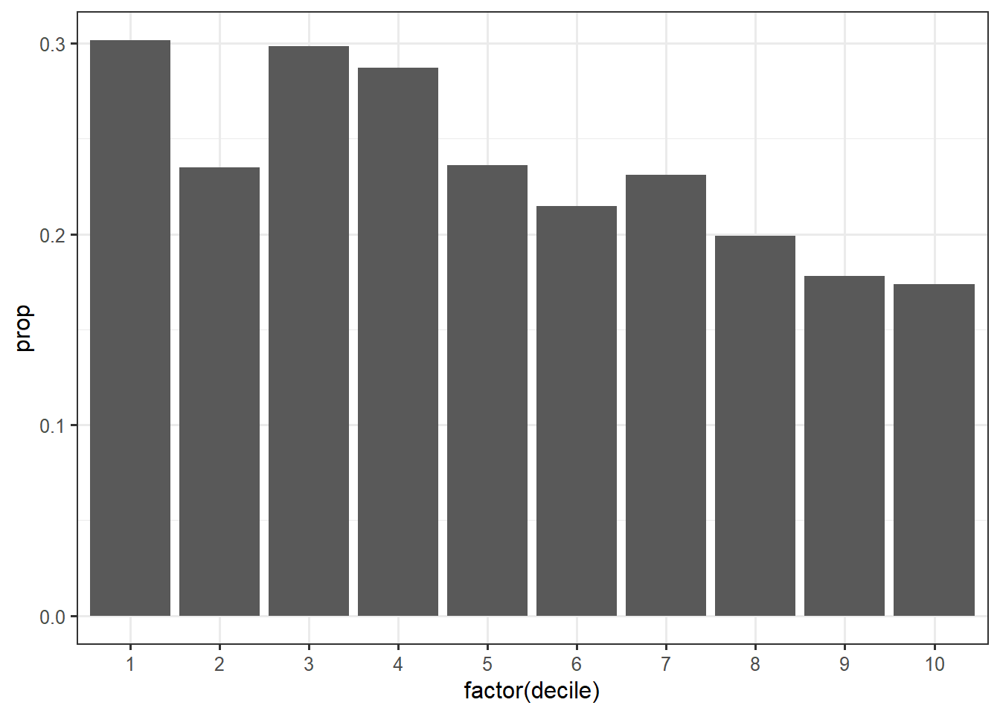
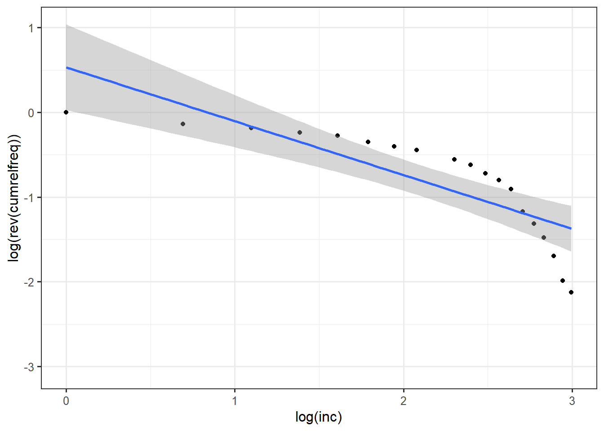

How far can we go with income brackets? (in progress)
To build their database on World political cleavages and inequality, Piketty and his team had to use electoral survey data. One problem with these sources is that they collect income data through brackets, without reporting the overall income average of the sample or the average per bracket. This Thus poses the question of how far one can go in terms of statistical analysis with only income brackets as a source of information for income. I will here explore what can be done with such a variable as well as the technical note that Piketty et al. (2021) provides to explain how they computed the vote share for income and education decile, which they claim is one of their main contributions on political cleavages and inequality.
From brackets to decile
The wpid is based on an impressive dataset compiling electoral survey data of 500 elections since 1948. Since the technical note takes Canada’s 2015 election as an example, I will use the latter here.
rm(list = ls())
ca <- read_dta("ca.dta")
ca2015 <- ca %>%
filter(year == 2015)
rm(ca)
sort(unique(ca2015$inc)) [1] 1 2 3 4 5 6 7 8 10 11 12 13 14 15 16 17 18 19 20Note that there is already something going on here: in the dataset, the variable income has 19 brackets/categories here whereas it has 18 in the technical note. Furthermore, income brackets “jump” from 8 to 10. I will ignore these issues and still work with this dataset, we just won’t have the same results as in Piketty & al’s example.
A first step in analyzing such a variable is to compute the frequency, relative frequency and the cumulative frequencies. More precisely, I will construct two tables. On the one hand, I compute the descriptive statistics for the NDP’s voters within each income brackets. On the other hand, I construct a table for the overall distribution of income brackets for the NPD’s voters only. Note that I directly add the proportion of NDP’s voters from the first table to the second one to simplify further calculations:
ca2015 %>%
group_by(inc) %>%
count(votendp) %>%
drop_na() %>%
mutate(
cum.n = cumsum(n),
prop = n/sum(n)) %>% ungroup() -> table.income.pervote
ca2015 %>% filter(votendp == 1) %>%
group_by(inc) %>%
count(votendp) %>%
drop_na() %>%
ungroup() %>%
mutate(
prop_vote = table.income.pervote$prop[table.income.pervote$votendp == 1],
cum.n = cumsum(n),
prop = n/sum(n),
rangeleft = lag(cumsum(prop), default = 0),
cumrelfreqN = cumsum(prop),
cumrelfreqInc = cumsum(inc/sum(inc))) -> table.income
table.income.pervote %>%
gt(caption = "Distribution of the vote for the NDP by income group")| inc | votendp | n | cum.n | prop |
|---|---|---|---|---|
| 1 | 0 | 114 | 114 | 0.6826347 |
| 1 | 1 | 53 | 167 | 0.3173653 |
| 2 | 0 | 161 | 161 | 0.7419355 |
| 2 | 1 | 56 | 217 | 0.2580645 |
| 3 | 0 | 49 | 49 | 0.7656250 |
| 3 | 1 | 15 | 64 | 0.2343750 |
| 4 | 0 | 129 | 129 | 0.7865854 |
| 4 | 1 | 35 | 164 | 0.2134146 |
| 5 | 0 | 108 | 108 | 0.6708075 |
| 5 | 1 | 53 | 161 | 0.3291925 |
| 6 | 0 | 112 | 112 | 0.7044025 |
| 6 | 1 | 47 | 159 | 0.2955975 |
| 7 | 0 | 114 | 114 | 0.7215190 |
| 7 | 1 | 44 | 158 | 0.2784810 |
| 8 | 0 | 244 | 244 | 0.7746032 |
| 8 | 1 | 71 | 315 | 0.2253968 |
| 10 | 0 | 140 | 140 | 0.8045977 |
| 10 | 1 | 34 | 174 | 0.1954023 |
| 11 | 0 | 114 | 114 | 0.7651007 |
| 11 | 1 | 35 | 149 | 0.2348993 |
| 12 | 0 | 154 | 154 | 0.7549020 |
| 12 | 1 | 50 | 204 | 0.2450980 |
| 13 | 0 | 105 | 105 | 0.7894737 |
| 13 | 1 | 28 | 133 | 0.2105263 |
| 14 | 0 | 208 | 208 | 0.7878788 |
| 14 | 1 | 56 | 264 | 0.2121212 |
| 15 | 0 | 95 | 95 | 0.8333333 |
| 15 | 1 | 19 | 114 | 0.1666667 |
| 16 | 0 | 113 | 113 | 0.8129496 |
| 16 | 1 | 26 | 139 | 0.1870504 |
| 17 | 0 | 171 | 171 | 0.8300971 |
| 17 | 1 | 35 | 206 | 0.1699029 |
| 18 | 0 | 83 | 83 | 0.7830189 |
| 18 | 1 | 23 | 106 | 0.2169811 |
| 19 | 0 | 143 | 143 | 0.8171429 |
| 19 | 1 | 32 | 175 | 0.1828571 |
| 20 | 0 | 145 | 145 | 0.8734940 |
| 20 | 1 | 21 | 166 | 0.1265060 |
table.income %>%
gt(caption = "Distribution of income group among NDP's voters")| inc | votendp | n | prop_vote | cum.n | prop | rangeleft | cumrelfreqN | cumrelfreqInc |
|---|---|---|---|---|---|---|---|---|
| 1 | 1 | 53 | 0.3173653 | 53 | 0.07230559 | 0.00000000 | 0.07230559 | 0.004975124 |
| 2 | 1 | 56 | 0.2580645 | 109 | 0.07639836 | 0.07230559 | 0.14870396 | 0.014925373 |
| 3 | 1 | 15 | 0.2343750 | 124 | 0.02046385 | 0.14870396 | 0.16916780 | 0.029850746 |
| 4 | 1 | 35 | 0.2134146 | 159 | 0.04774898 | 0.16916780 | 0.21691678 | 0.049751244 |
| 5 | 1 | 53 | 0.3291925 | 212 | 0.07230559 | 0.21691678 | 0.28922237 | 0.074626866 |
| 6 | 1 | 47 | 0.2955975 | 259 | 0.06412005 | 0.28922237 | 0.35334243 | 0.104477612 |
| 7 | 1 | 44 | 0.2784810 | 303 | 0.06002729 | 0.35334243 | 0.41336971 | 0.139303483 |
| 8 | 1 | 71 | 0.2253968 | 374 | 0.09686221 | 0.41336971 | 0.51023192 | 0.179104478 |
| 10 | 1 | 34 | 0.1954023 | 408 | 0.04638472 | 0.51023192 | 0.55661664 | 0.228855721 |
| 11 | 1 | 35 | 0.2348993 | 443 | 0.04774898 | 0.55661664 | 0.60436562 | 0.283582090 |
| 12 | 1 | 50 | 0.2450980 | 493 | 0.06821282 | 0.60436562 | 0.67257844 | 0.343283582 |
| 13 | 1 | 28 | 0.2105263 | 521 | 0.03819918 | 0.67257844 | 0.71077763 | 0.407960199 |
| 14 | 1 | 56 | 0.2121212 | 577 | 0.07639836 | 0.71077763 | 0.78717599 | 0.477611940 |
| 15 | 1 | 19 | 0.1666667 | 596 | 0.02592087 | 0.78717599 | 0.81309686 | 0.552238806 |
| 16 | 1 | 26 | 0.1870504 | 622 | 0.03547067 | 0.81309686 | 0.84856753 | 0.631840796 |
| 17 | 1 | 35 | 0.1699029 | 657 | 0.04774898 | 0.84856753 | 0.89631651 | 0.716417910 |
| 18 | 1 | 23 | 0.2169811 | 680 | 0.03137790 | 0.89631651 | 0.92769441 | 0.805970149 |
| 19 | 1 | 32 | 0.1828571 | 712 | 0.04365621 | 0.92769441 | 0.97135061 | 0.900497512 |
| 20 | 1 | 21 | 0.1265060 | 733 | 0.02864939 | 0.97135061 | 1.00000000 | 1.000000000 |
We can then plot income groups against their proportion
table.income.pervote %>% filter(votendp == 1) %>%
ggplot()+
aes(x = factor(inc), y = prop)+
geom_col()+
theme_bw()+
xlab("Income group") -> income.group.plot
table.income %>%
ggplot()+
aes(x = factor(inc), y = prop) %>%
geom_col()+
theme_bw()+
ylab("")+
xlab("") -> income.group.plot2
cowplot::plot_grid(income.group.plot, income.group.plot2)
On the left, we have a graph very similar to the one of the technical note. The right-sided graph is different, because the proportion are for the overall NPD’s voters whereas the left-sided graph represents the proportion within the income group. For example, 30% of income bracket 1 voted for the NDP, but they represent about 7.4% of total NDP’s voters.
What makes Piketty’s team approach special and interesting is their systematic analysis in terms of quantile groups. This is, according to them, their main contribution and this approach has the advantage to allow for systematic comparison accross space and time. We will try to reproduce here their conversion of income group into quantiles.
In R, the decile for each observation can be added to the dataset with the function ntile():
ca2015 <- ca2015 %>%
mutate(
decile = ntile(inc, 10)
)Now, the last column of ca2015 is the decile for each observation in the dataset.
ca2015 %>%
group_by(decile) %>%
count(votendp) %>%
filter(votendp == 1) %>%
drop_na() %>%
ungroup() %>%
mutate(prop = n/sum(n)) -> table.income.vote
table.income.vote %>% gt(caption = "Decile and income bracket")| decile | votendp | n | prop |
|---|---|---|---|
| 1 | 1 | 76 | 0.10368349 |
| 2 | 1 | 70 | 0.09549795 |
| 3 | 1 | 106 | 0.14461119 |
| 4 | 1 | 81 | 0.11050477 |
| 5 | 1 | 57 | 0.07776262 |
| 6 | 1 | 88 | 0.12005457 |
| 7 | 1 | 70 | 0.09549795 |
| 8 | 1 | 67 | 0.09140518 |
| 9 | 1 | 63 | 0.08594816 |
| 10 | 1 | 55 | 0.07503411 |
However, it is straightforward to see that the ntile() function has flaws in decile computing. More generally, computing income decile when the income variable is in brackets seems complicated, but the technical note proposes a re-weighting average approach to partially solve this problem.
To see how the re-weighing approach works, let’s go back to the first table:
table.income %>%
gt()| inc | votendp | n | prop_vote | cum.n | prop | rangeleft | cumrelfreqN | cumrelfreqInc |
|---|---|---|---|---|---|---|---|---|
| 1 | 1 | 53 | 0.3173653 | 53 | 0.07230559 | 0.00000000 | 0.07230559 | 0.004975124 |
| 2 | 1 | 56 | 0.2580645 | 109 | 0.07639836 | 0.07230559 | 0.14870396 | 0.014925373 |
| 3 | 1 | 15 | 0.2343750 | 124 | 0.02046385 | 0.14870396 | 0.16916780 | 0.029850746 |
| 4 | 1 | 35 | 0.2134146 | 159 | 0.04774898 | 0.16916780 | 0.21691678 | 0.049751244 |
| 5 | 1 | 53 | 0.3291925 | 212 | 0.07230559 | 0.21691678 | 0.28922237 | 0.074626866 |
| 6 | 1 | 47 | 0.2955975 | 259 | 0.06412005 | 0.28922237 | 0.35334243 | 0.104477612 |
| 7 | 1 | 44 | 0.2784810 | 303 | 0.06002729 | 0.35334243 | 0.41336971 | 0.139303483 |
| 8 | 1 | 71 | 0.2253968 | 374 | 0.09686221 | 0.41336971 | 0.51023192 | 0.179104478 |
| 10 | 1 | 34 | 0.1954023 | 408 | 0.04638472 | 0.51023192 | 0.55661664 | 0.228855721 |
| 11 | 1 | 35 | 0.2348993 | 443 | 0.04774898 | 0.55661664 | 0.60436562 | 0.283582090 |
| 12 | 1 | 50 | 0.2450980 | 493 | 0.06821282 | 0.60436562 | 0.67257844 | 0.343283582 |
| 13 | 1 | 28 | 0.2105263 | 521 | 0.03819918 | 0.67257844 | 0.71077763 | 0.407960199 |
| 14 | 1 | 56 | 0.2121212 | 577 | 0.07639836 | 0.71077763 | 0.78717599 | 0.477611940 |
| 15 | 1 | 19 | 0.1666667 | 596 | 0.02592087 | 0.78717599 | 0.81309686 | 0.552238806 |
| 16 | 1 | 26 | 0.1870504 | 622 | 0.03547067 | 0.81309686 | 0.84856753 | 0.631840796 |
| 17 | 1 | 35 | 0.1699029 | 657 | 0.04774898 | 0.84856753 | 0.89631651 | 0.716417910 |
| 18 | 1 | 23 | 0.2169811 | 680 | 0.03137790 | 0.89631651 | 0.92769441 | 0.805970149 |
| 19 | 1 | 32 | 0.1828571 | 712 | 0.04365621 | 0.92769441 | 0.97135061 | 0.900497512 |
| 20 | 1 | 21 | 0.1265060 | 733 | 0.02864939 | 0.97135061 | 1.00000000 | 1.000000000 |
We can directly see the problem posed by income brackets: for example, we can observe that all of income bracket one belongs to the first decile since its relative range is between 0 and 0.0723. However, the relative range of bracket two is [0.0723 - 0.1487]. Some part of it belong to the first decile ([0 - 0.1]), but some belong to the second ([0 - 0.2]). The approach to compute the proportion of observations belonging to the any given decile is to compute the share of each income bracket belonging to this decile and then compute a weighted average. For example, if I want to compute the share of observation of the first decile (D10), I already know that 100% of income bracket one belongs to D10 but I need to know the share of bracket 2 (B2) belonging to D10.
To estimate this, let’s assume the distribution of B2 is uniform \(x \sim U[0.0723; 0.1487]\), with x the observation within this range. We want to know \(P(x<0.1)\), that is to say, the probability that x belongs to the first decile. We use the uniform cumulative distribution function with parameters min = 0.073 and max = 0.1487: \(P(x<0.1) = \frac{0.1-0.0723}{0.1487-0.0723} = 0.3626\). This means that 36.26% of B2 belongs to D10. Then, the weighted average for the proportion of observation within D10: \(\frac{1*0.317+0.3626*0.26}{1+0.3626} = 0.3018\). 30.2% the first decile voters voted for the NDP in 2015.
Here are the computations in R:
punif(0.1, table.income$cumrelfreqN[1], table.income$cumrelfreqN[2])[1] 0.3625(1*0.317+0.3626*0.26)/(1+0.3626)[1] 0.3018318weighted.mean(x = c(table.income$prop_vote[1], table.income$prop_vote[2]), w = c(1, punif(0.1, table.income$cumrelfreqN[1], table.income$cumrelfreqN[2])))[1] 0.301588Unfortunately, there is to my knowledge no function in R that will compute the weights automatically. I can nonetheless compute them through a tedious for loop:
weight <- rep(NA, length(table.income$inc))
for (i in 1:length(table.income$inc)) {
weight[i] <- ifelse(table.income$cumrelfreqN[i] < 0.1 | table.income$cumrelfreqN[i] == 1, 1,
ifelse(table.income$cumrelfreqN[i] > 0.1 & table.income$cumrelfreqN[i] < 0.2, punif(0.1, min = table.income$cumrelfreqN[i-1], max = table.income$cumrelfreqN[i]),
ifelse(table.income$cumrelfreqN[i] > 0.2 & table.income$cumrelfreqN[i] < 0.3, punif(0.2, min = table.income$cumrelfreqN[i-1], max = table.income$cumrelfreqN[i]),
ifelse(table.income$cumrelfreqN[i] > 0.3 & table.income$cumrelfreqN[i] < 0.4, punif(0.3, min = table.income$cumrelfreqN[i-1], max = table.income$cumrelfreqN[i]),
ifelse(table.income$cumrelfreqN[i] > 0.4 & table.income$cumrelfreqN[i] < 0.5, punif(0.4, min = table.income$cumrelfreqN[i-1], max = table.income$cumrelfreqN[i]),
ifelse(table.income$cumrelfreqN[i] > 0.5 & table.income$cumrelfreqN[i] < 0.6, punif(0.5, min = table.income$cumrelfreqN[i-1], max = table.income$cumrelfreqN[i]),
ifelse(table.income$cumrelfreqN[i] > 0.6 & table.income$cumrelfreqN[i] < 0.7, punif(0.6, min = table.income$cumrelfreqN[i-1], max = table.income$cumrelfreqN[i]),
ifelse(table.income$cumrelfreqN[i] > 0.7 & table.income$cumrelfreqN[i] < 0.8, punif(0.7, min = table.income$cumrelfreqN[i-1], max = table.income$cumrelfreqN[i]),
ifelse(table.income$cumrelfreqN[i] > 0.8 & table.income$cumrelfreqN[i] < 0.9, punif(0.8, min = table.income$cumrelfreqN[i-1], max = table.income$cumrelfreqN[i]),
ifelse(table.income$cumrelfreqN[i] > 0.9 & table.income$cumrelfreqN[i] < 1, punif(0.9, min = table.income$cumrelfreqN[i-1], max = table.income$cumrelfreqN[i]), 1))))))))))
}
weight [1] 1.0000000 0.3625000 0.0000000 0.6457143 0.0000000 0.1680851 0.7772727
[8] 0.8943662 0.0000000 0.9085714 0.0000000 0.7178571 0.0000000 0.4947368
[15] 0.0000000 0.0000000 0.1173913 0.0000000 1.0000000I replace the 0 with 1:
weight <- ifelse(weight == 0, 1, weight)
table.income <- table.income %>%
mutate(share_decile = weight)
table.income %>%
mutate(share_rest = 1 - weight) -> table.income
table.income %>% mutate(
prop_vote = table.income.pervote$prop[table.income.pervote$votendp == 1]
) %>% gt()| inc | votendp | n | prop_vote | cum.n | prop | rangeleft | cumrelfreqN | cumrelfreqInc | share_decile | share_rest |
|---|---|---|---|---|---|---|---|---|---|---|
| 1 | 1 | 53 | 0.3173653 | 53 | 0.07230559 | 0.00000000 | 0.07230559 | 0.004975124 | 1.0000000 | 0.00000000 |
| 2 | 1 | 56 | 0.2580645 | 109 | 0.07639836 | 0.07230559 | 0.14870396 | 0.014925373 | 0.3625000 | 0.63750000 |
| 3 | 1 | 15 | 0.2343750 | 124 | 0.02046385 | 0.14870396 | 0.16916780 | 0.029850746 | 1.0000000 | 0.00000000 |
| 4 | 1 | 35 | 0.2134146 | 159 | 0.04774898 | 0.16916780 | 0.21691678 | 0.049751244 | 0.6457143 | 0.35428571 |
| 5 | 1 | 53 | 0.3291925 | 212 | 0.07230559 | 0.21691678 | 0.28922237 | 0.074626866 | 1.0000000 | 0.00000000 |
| 6 | 1 | 47 | 0.2955975 | 259 | 0.06412005 | 0.28922237 | 0.35334243 | 0.104477612 | 0.1680851 | 0.83191489 |
| 7 | 1 | 44 | 0.2784810 | 303 | 0.06002729 | 0.35334243 | 0.41336971 | 0.139303483 | 0.7772727 | 0.22272727 |
| 8 | 1 | 71 | 0.2253968 | 374 | 0.09686221 | 0.41336971 | 0.51023192 | 0.179104478 | 0.8943662 | 0.10563380 |
| 10 | 1 | 34 | 0.1954023 | 408 | 0.04638472 | 0.51023192 | 0.55661664 | 0.228855721 | 1.0000000 | 0.00000000 |
| 11 | 1 | 35 | 0.2348993 | 443 | 0.04774898 | 0.55661664 | 0.60436562 | 0.283582090 | 0.9085714 | 0.09142857 |
| 12 | 1 | 50 | 0.2450980 | 493 | 0.06821282 | 0.60436562 | 0.67257844 | 0.343283582 | 1.0000000 | 0.00000000 |
| 13 | 1 | 28 | 0.2105263 | 521 | 0.03819918 | 0.67257844 | 0.71077763 | 0.407960199 | 0.7178571 | 0.28214286 |
| 14 | 1 | 56 | 0.2121212 | 577 | 0.07639836 | 0.71077763 | 0.78717599 | 0.477611940 | 1.0000000 | 0.00000000 |
| 15 | 1 | 19 | 0.1666667 | 596 | 0.02592087 | 0.78717599 | 0.81309686 | 0.552238806 | 0.4947368 | 0.50526316 |
| 16 | 1 | 26 | 0.1870504 | 622 | 0.03547067 | 0.81309686 | 0.84856753 | 0.631840796 | 1.0000000 | 0.00000000 |
| 17 | 1 | 35 | 0.1699029 | 657 | 0.04774898 | 0.84856753 | 0.89631651 | 0.716417910 | 1.0000000 | 0.00000000 |
| 18 | 1 | 23 | 0.2169811 | 680 | 0.03137790 | 0.89631651 | 0.92769441 | 0.805970149 | 0.1173913 | 0.88260870 |
| 19 | 1 | 32 | 0.1828571 | 712 | 0.04365621 | 0.92769441 | 0.97135061 | 0.900497512 | 1.0000000 | 0.00000000 |
| 20 | 1 | 21 | 0.1265060 | 733 | 0.02864939 | 0.97135061 | 1.00000000 | 1.000000000 | 1.0000000 | 0.00000000 |
There can be mistakes, but the results seem to make sense
Since I do not want to ever do this computation again (😅), I put all of this into a function:
weight_share <- function(x){
weight <- rep(NA, length(x))
for (i in 1:length(x)) {
weight[i] <- ifelse(x[i] < 0.1 | x[i] == 1, 1,
ifelse(x[i] > 0.1 & x[i] < 0.2, punif(0.1, min = x[i-1], max = x[i]),
ifelse(x[i] > 0.2 & x[i] < 0.3, punif(0.2, min = x[i-1], max = x[i]),
ifelse(x[i] > 0.3 & x[i] < 0.4, punif(0.3, min = x[i-1], max = x[i]),
ifelse(x[i] > 0.4 & x[i] < 0.5, punif(0.4, min = x[i-1], max = x[i]),
ifelse(x[i] > 0.5 & x[i] < 0.6, punif(0.5, min = x[i-1], max = x[i]),
ifelse(x[i] > 0.6 & x[i] < 0.7, punif(0.6, min = x[i-1], max = x[i]),
ifelse(x[i] > 0.7 & x[i] < 0.8, punif(0.7, min = x[i-1], max = x[i]),
ifelse(x[i] > 0.8 & x[i] < 0.9, punif(0.8, min = x[i-1], max = x[i]),
ifelse(x[i] > 0.9 & x[i] < 1, punif(0.9, min = x[i-1], max = x[i]), 1))))))))))
}
weight <- ifelse(weight == 0, 1, weight)
print(weight)
}Let’s check if the function works
weight_share(x = table.income$cumrelfreqN) [1] 1.0000000 0.3625000 1.0000000 0.6457143 1.0000000 0.1680851 0.7772727
[8] 0.8943662 1.0000000 0.9085714 1.0000000 0.7178571 1.0000000 0.4947368
[15] 1.0000000 1.0000000 0.1173913 1.0000000 1.0000000We are almost done, there are only the weighted averages for each decile left to calculate. One further step is to compute dummy variables to show to which decile income brackets belong to. This will produce a table close to the one from the technical note.
table.income %>%
mutate(d1 = ifelse(table.income$rangeleft >= 0 & table.income$rangeleft < 0.1, 1, 0),
d2 = ifelse(table.income$rangeleft %[]% c(0.1, 0.2) | table.income$cumrelfreqN %[]% c(0.1, 0.2), 1, 0), # the %[]% is an within bracket operator from the Desctools package. for example, x %[]% c(a, b) checks whether x belong to the interval [a, b] with a<b
d3 = ifelse(table.income$rangeleft %[]% c(0.2, 0.3) | table.income$cumrelfreqN %[]% c(0.2, 0.3), 1, 0),
d4 = ifelse(table.income$rangeleft %[]% c(0.3, 0.4) | table.income$cumrelfreqN %[]% c(0.3, 0.4), 1, 0),
d5 = ifelse(table.income$rangeleft %[]% c(0.4, 0.5) | table.income$cumrelfreqN %[]% c(0.4, 0.5), 1, 0),
d6 = ifelse(table.income$rangeleft %[]% c(0.5, 0.6) | table.income$cumrelfreqN %[]% c(0.5, 0.6), 1, 0),
d7 = ifelse(table.income$rangeleft %[]% c(0.6, 0.7) | table.income$cumrelfreqN %[]% c(0.6, 0.7), 1, 0),
d8 = ifelse(table.income$rangeleft %[]% c(0.7, 0.8) | table.income$cumrelfreqN %[]% c(0.7, 0.8), 1, 0),
d9 = ifelse(table.income$rangeleft %[]% c(0.8, 0.9) | table.income$cumrelfreqN %[]% c(0.8, 0.9), 1, 0),
d10 = ifelse(table.income$rangeleft %[]% c(0.9, 1) | table.income$cumrelfreqN %[]% c(0.9, 1), 1, 0)) -> table.income
table.income %>% gt()| inc | votendp | n | prop_vote | cum.n | prop | rangeleft | cumrelfreqN | cumrelfreqInc | share_decile | share_rest | d1 | d2 | d3 | d4 | d5 | d6 | d7 | d8 | d9 | d10 |
|---|---|---|---|---|---|---|---|---|---|---|---|---|---|---|---|---|---|---|---|---|
| 1 | 1 | 53 | 0.3173653 | 53 | 0.07230559 | 0.00000000 | 0.07230559 | 0.004975124 | 1.0000000 | 0.00000000 | 1 | 0 | 0 | 0 | 0 | 0 | 0 | 0 | 0 | 0 |
| 2 | 1 | 56 | 0.2580645 | 109 | 0.07639836 | 0.07230559 | 0.14870396 | 0.014925373 | 0.3625000 | 0.63750000 | 1 | 1 | 0 | 0 | 0 | 0 | 0 | 0 | 0 | 0 |
| 3 | 1 | 15 | 0.2343750 | 124 | 0.02046385 | 0.14870396 | 0.16916780 | 0.029850746 | 1.0000000 | 0.00000000 | 0 | 1 | 0 | 0 | 0 | 0 | 0 | 0 | 0 | 0 |
| 4 | 1 | 35 | 0.2134146 | 159 | 0.04774898 | 0.16916780 | 0.21691678 | 0.049751244 | 0.6457143 | 0.35428571 | 0 | 1 | 1 | 0 | 0 | 0 | 0 | 0 | 0 | 0 |
| 5 | 1 | 53 | 0.3291925 | 212 | 0.07230559 | 0.21691678 | 0.28922237 | 0.074626866 | 1.0000000 | 0.00000000 | 0 | 0 | 1 | 0 | 0 | 0 | 0 | 0 | 0 | 0 |
| 6 | 1 | 47 | 0.2955975 | 259 | 0.06412005 | 0.28922237 | 0.35334243 | 0.104477612 | 0.1680851 | 0.83191489 | 0 | 0 | 1 | 1 | 0 | 0 | 0 | 0 | 0 | 0 |
| 7 | 1 | 44 | 0.2784810 | 303 | 0.06002729 | 0.35334243 | 0.41336971 | 0.139303483 | 0.7772727 | 0.22272727 | 0 | 0 | 0 | 1 | 1 | 0 | 0 | 0 | 0 | 0 |
| 8 | 1 | 71 | 0.2253968 | 374 | 0.09686221 | 0.41336971 | 0.51023192 | 0.179104478 | 0.8943662 | 0.10563380 | 0 | 0 | 0 | 0 | 1 | 1 | 0 | 0 | 0 | 0 |
| 10 | 1 | 34 | 0.1954023 | 408 | 0.04638472 | 0.51023192 | 0.55661664 | 0.228855721 | 1.0000000 | 0.00000000 | 0 | 0 | 0 | 0 | 0 | 1 | 0 | 0 | 0 | 0 |
| 11 | 1 | 35 | 0.2348993 | 443 | 0.04774898 | 0.55661664 | 0.60436562 | 0.283582090 | 0.9085714 | 0.09142857 | 0 | 0 | 0 | 0 | 0 | 1 | 1 | 0 | 0 | 0 |
| 12 | 1 | 50 | 0.2450980 | 493 | 0.06821282 | 0.60436562 | 0.67257844 | 0.343283582 | 1.0000000 | 0.00000000 | 0 | 0 | 0 | 0 | 0 | 0 | 1 | 0 | 0 | 0 |
| 13 | 1 | 28 | 0.2105263 | 521 | 0.03819918 | 0.67257844 | 0.71077763 | 0.407960199 | 0.7178571 | 0.28214286 | 0 | 0 | 0 | 0 | 0 | 0 | 1 | 1 | 0 | 0 |
| 14 | 1 | 56 | 0.2121212 | 577 | 0.07639836 | 0.71077763 | 0.78717599 | 0.477611940 | 1.0000000 | 0.00000000 | 0 | 0 | 0 | 0 | 0 | 0 | 0 | 1 | 0 | 0 |
| 15 | 1 | 19 | 0.1666667 | 596 | 0.02592087 | 0.78717599 | 0.81309686 | 0.552238806 | 0.4947368 | 0.50526316 | 0 | 0 | 0 | 0 | 0 | 0 | 0 | 1 | 1 | 0 |
| 16 | 1 | 26 | 0.1870504 | 622 | 0.03547067 | 0.81309686 | 0.84856753 | 0.631840796 | 1.0000000 | 0.00000000 | 0 | 0 | 0 | 0 | 0 | 0 | 0 | 0 | 1 | 0 |
| 17 | 1 | 35 | 0.1699029 | 657 | 0.04774898 | 0.84856753 | 0.89631651 | 0.716417910 | 1.0000000 | 0.00000000 | 0 | 0 | 0 | 0 | 0 | 0 | 0 | 0 | 1 | 0 |
| 18 | 1 | 23 | 0.2169811 | 680 | 0.03137790 | 0.89631651 | 0.92769441 | 0.805970149 | 0.1173913 | 0.88260870 | 0 | 0 | 0 | 0 | 0 | 0 | 0 | 0 | 1 | 1 |
| 19 | 1 | 32 | 0.1828571 | 712 | 0.04365621 | 0.92769441 | 0.97135061 | 0.900497512 | 1.0000000 | 0.00000000 | 0 | 0 | 0 | 0 | 0 | 0 | 0 | 0 | 0 | 1 |
| 20 | 1 | 21 | 0.1265060 | 733 | 0.02864939 | 0.97135061 | 1.00000000 | 1.000000000 | 1.0000000 | 0.00000000 | 0 | 0 | 0 | 0 | 0 | 0 | 0 | 0 | 0 | 1 |
Tu put the code above into a function:
decile_dummies <- function(data, rangeleft, rangeright){
data %>%
mutate(d1 = ifelse({{rangeleft}} >= 0 & {{rangeleft}} < 0.1, 1, 0),
d2 = ifelse({{rangeleft}} %[]% c(0.1, 0.2) | {{rangeright}} %[]% c(0.1, 0.2), 1, 0), #%[]% is an within bracket operator from the Desctools package. for example, x %[]% c(a, b) checks whether x belong to the interval [a, b] with a<b
d3 = ifelse({{rangeleft}} %[]% c(0.2, 0.3) | {{rangeright}} %[]% c(0.2, 0.3), 1, 0),
d4 = ifelse({{rangeleft}} %[]% c(0.3, 0.4) | {{rangeright}} %[]% c(0.3, 0.4), 1, 0),
d5 = ifelse({{rangeleft}} %[]% c(0.4, 0.5) | {{rangeright}} %[]% c(0.4, 0.5), 1, 0),
d6 = ifelse({{rangeleft}} %[]% c(0.5, 0.6) | {{rangeright}} %[]% c(0.5, 0.6), 1, 0),
d7 = ifelse({{rangeleft}} %[]% c(0.6, 0.7) | {{rangeright}} %[]% c(0.6, 0.7), 1, 0),
d8 = ifelse({{rangeleft}} %[]% c(0.7, 0.8) | {{rangeright}} %[]% c(0.7, 0.8), 1, 0),
d9 = ifelse({{rangeleft}} %[]% c(0.8, 0.9) | {{rangeright}} %[]% c(0.8, 0.9), 1, 0),
d10 = ifelse({{rangeleft}} %[]% c(0.9, 1) | {{rangeright}} %[]% c(0.9, 1), 1, 0))
}This compute the proportion of the first decile directly from the table above:
weighted.mean(x = table.income$prop_vote[table.income$d1 == 1], w = table.income$share_decile[table.income$d1 == 1]) # d1[1] 0.301588Let’s try to compute the 3 first decile in a way that can then be put into a for loop or even into a function later
# for d_i
weighted.mean(x = c(table.income$prop_vote[table.income[,12] == 1]),
w = c(table.income$share_decile[table.income[,12] == 1])) #d1: take columns 11 (D1) and the values of prop vote and share decile for which D11 == 1[1] 0.301588weighted.mean(x = c(table.income$prop_vote[table.income[,13] == 1]),
w = c(table.income$share_rest[table.income[,12] == 1 & table.income[, 13] == 1],
table.income$share_decile[table.income[,12] == 0 & table.income[,13] == 1])) #d2[1] 0.2350616weighted.mean(x = c(table.income$prop_vote[table.income[,14] == 1]),
w = c(table.income$share_rest[table.income[,14-1] == 1 & table.income[, 14] == 1], #d3
table.income$share_decile[table.income[14-1] == 0 & table.income[,14] == 1]))[1] 0.2985395Let’s try the for loop
decile_vec <- rep(NA, 10)
decile <- c()
#11:20 are the decile dummies columns in the dataset
decile_vec <- capture.output(for (i in 12:21) {
if(i == 12){
decile = c(weighted.mean(x = c(table.income$prop_vote[table.income[,i] == 1]),
w = c(table.income$share_decile[table.income[,i] == 1])))
}else{
decile = c(weighted.mean(x = c(table.income$prop_vote[table.income[,i] == 1]),
w = c(table.income$share_rest[table.income[,i-1] == 1 & table.income[, i] == 1],
table.income$share_decile[table.income[i-1] == 0 & table.income[,i] == 1])))
}
cat(decile,"\n")
})
decile_vec <- as.numeric(decile_vec)
decile <- data.frame(decile = 1:10,
prop = decile_vec)
decile decile prop
1 1 0.3015880
2 2 0.2350616
3 3 0.2985395
4 4 0.2873299
5 5 0.2359808
6 6 0.2147917
7 7 0.2308659
8 8 0.1992121
9 9 0.1779249
10 10 0.1737567This seems to work, the 3 first values are the same as the ones computed above
decile %>%
ggplot()+
aes(x = factor(decile), y = prop)+
geom_col()+
theme_bw()
This graph is very close to the one from the techninal note (figure one, right-sided graph)

For now, let’s put the for loop into a function: this function would require the decile dummies columns, the columns for the proportion, the column for decile share and the column for the rest’s share:
decile <- function(data, columns, prop, share_decile, share_rest){
decile_vec <- rep(NA, 10)
decile <- c()
decile_vec <- capture.output(for (i in min(columns):max(columns)) {
if(i == min(columns)){
decile = c(weighted.mean(x = c(prop[data[,i] == 1]),
w = c(share_decile[data[,i] == 1])))
}else{
decile = c(weighted.mean(x = c(prop[data[,i] == 1]),
w = c(share_rest[data[,i-1] == 1 & data[, i] == 1],
share_decile[data[i-1] == 0 & data[,i] == 1])))
}
cat(decile,"\n")
})
decile_vec <- as.numeric(decile_vec)
decile <- data.frame(decile = 1:10,
prop = decile_vec)
decile
}decile(data = table.income, columns = 12:21, prop = table.income$prop_vote, share_decile = table.income$share_decile, share_rest = table.income$share_rest) decile prop
1 1 0.3015880
2 2 0.2350616
3 3 0.2985395
4 4 0.2873299
5 5 0.2359808
6 6 0.2147917
7 7 0.2308659
8 8 0.1992121
9 9 0.1779249
10 10 0.1737567The function seems to work, but requires a specific dataframe (formatted as table.income).
Sidenote: fitting a Pareto line to income brackets
Finally, one can also try to fit a “Pareto line” to the income bracket data. Vilfredo Pareto (1848-1923) is well-known for being one of the first economist to have computed inequality indices (his famous alpha coefficient) directly from personal income distribution data. His relationship \(log(N) = A-\alpha log(x)\), with N the number of people earning more than income level x, is a famous relationship and almost every course on income inequality measurement starts with it.
First, a table need to be constructed from the data, we count the number of observation per income bracket and compute the inverse of the cumulative relative frequencies, which is the same as N is Pareto’s equation.
ca2015 %>%
count(inc) %>%
mutate(prop = n/sum(n),
cumrelfreq = cumsum(prop),
inverse_rcdf = rev(cumrelfreq)) -> paretotable
paretotable %>%
gt()| inc | n | prop | cumrelfreq | inverse_rcdf |
|---|---|---|---|---|
| 1 | 211 | 0.04687847 | 0.04687847 | 1.00000000 |
| 2 | 327 | 0.07265052 | 0.11952899 | 0.87136192 |
| 3 | 79 | 0.01755166 | 0.13708065 | 0.82914908 |
| 4 | 210 | 0.04665630 | 0.18373695 | 0.78626972 |
| 5 | 199 | 0.04421240 | 0.22794934 | 0.75960898 |
| 6 | 184 | 0.04087980 | 0.26882915 | 0.70451011 |
| 7 | 188 | 0.04176850 | 0.31059764 | 0.66985114 |
| 8 | 421 | 0.09353477 | 0.40413242 | 0.64185737 |
| 10 | 205 | 0.04554543 | 0.44967785 | 0.57209509 |
| 11 | 166 | 0.03688069 | 0.48655854 | 0.53921351 |
| 12 | 237 | 0.05265497 | 0.53921351 | 0.48655854 |
| 13 | 148 | 0.03288158 | 0.57209509 | 0.44967785 |
| 14 | 314 | 0.06976228 | 0.64185737 | 0.40413242 |
| 15 | 126 | 0.02799378 | 0.66985114 | 0.31059764 |
| 16 | 156 | 0.03465896 | 0.70451011 | 0.26882915 |
| 17 | 248 | 0.05509887 | 0.75960898 | 0.22794934 |
| 18 | 120 | 0.02666074 | 0.78626972 | 0.18373695 |
| 19 | 193 | 0.04287936 | 0.82914908 | 0.13708065 |
| 20 | 190 | 0.04221284 | 0.87136192 | 0.11952899 |
| NA | 579 | 0.12863808 | 1.00000000 | 0.04687847 |
Finally, one can plot the log of the inverse of the relative cumulative distribution function against the log of the income groups:
paretotable %>%
ggplot()+
aes(x = log(inc), y = log(rev(cumrelfreq)))+
geom_point()+
geom_smooth(method = "lm")+
theme_bw()
We can see that the line does not fit the data very well. As explained by Milanovic, the Pareto line fits well only for the top of income distribution. In fact, the data on personal income distribution that Pareto had only collected income data of the very rich. If he had data covering more than the top 1 percent, he would have probably made similar graphs as here and as in Milanovic’s blog post.